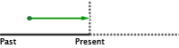

Present perfect continuous
Pretérito perfecto continuo
El pretérito perfecto continuo o "present perfect continuous" se usa para acciones que comenzaron en el pasado y siguen todavía en el presente o han acabado recientemente.

I have been watching tv for three hours
He estado viendo la tele durante tres horas
La diferencia con el present perfect es que el presente perfect continuous marca el énfasis en la acción en desarrollo, mientras que el present perfect la contempla como acabada.
I have watched tv for three hours.
He visto tele durante tres horas (ya he terminado).
I have been watching tv for three hours.
He estado viendo la tele durante tres horas (puede que siga haciéndolo y marca el énfasis en la acción, no en el resultado).
Formación del 'present perfect continuous'
Afirmativo
Sujeto + have/has+ been + verbo en forma -ing + ---
| Forma larga | Forma corta |
|---|---|
| I have been working | I've been working |
| You have been working | You've been working |
| He has been working | He's been working |
| She has been working | She's been working |
| It has been working | It's been working |
| We have been working | We've been working |
| You have been working | You've been working |
| They have been working | They've been working |
Ejemplos
| I've been studying English for two years. | He estado estudiando inglés durante dos años. |
| You have been working for three years. | Has estado trabajando durante tres años. |
| He's been lying this whole time. | Ha estado mintiendo todo este tiempo. |
| She has been playing the piano. | Ha estado tocando el piano. |
| It's been raining since yesterday. | Ha estado lloviendo desde ayer. |
| It's what we have been telling you, Mat. | Es lo que te hemos estado diciendo, Mat. |
| You've been taking care of them since childhood. | Los habéis estado cuidando desde niños. |
| They have been thinking about it for a long time. | Lo han estado pensando durante mucho tiempo. |
Negativo
El negativo tiene dos formas:
| Forma larga | Sujeto + have/has + not + been + verbo forma -ing + ... |
|---|---|
| Forma corta | Sujeto + haven't/hasn't + been + verbo en forma -ing + ... |
| Forma larga | Forma corta |
|---|---|
| I have not been working | I haven't been working |
| You have not been working | You haven't been working |
| He has not been working | He hasn't been working |
| She has not been working | She hasn't been working |
| It has not been working | It hasn't been working |
| We have not been working | We haven't been working |
| You have not been working | You haven't been working |
| They have not been working | They haven't been working |
Ejemplos
| I haven't been laughing lately . | No me he estado riendo últimamente. |
| You have not been learning anything. | No has estado aprendiendo nada. |
| He hasn't been living here. | No ha estado viviendo aquí. |
| She has not been singing. | No ha estado cantando. |
| It hasn't been raining. | No ha estado lloviendo. |
| We have not been fighting. | No hemos estado peleando. |
| You have not been eating lately. | No habéis estado comiendo últimamente. |
| They haven't been attending class. | No han estado asistiendo a clase. |
Interrogativo
Afirmativo
Have/has + sujeto + been + verbo en forma -ing + ...
Negativo
| Forma larga | Have/has + sujeto + not + been + v. forma -ing + ... |
|---|---|
| Forma corta | Haven't/hasn't + sujeto + been + v. en forma -ing + ... |
| Afirmativo | Negativo | |
|---|---|---|
| Have I been working? | Have I not been working? | Haven't I been working? |
| Have you been working? | Have you not been working? | Haven't you been working? |
| Has he been working? | Has he not been working? | Hasn't he been working? |
| Has she been working? | Has she not been working? | Hasn't she been working? |
| Has it been working? | Has it not been working? | Hasn't it been working? |
| Have we been working? | Have we not been working? | Haven't we been working? |
| Have you been working? | Have you not been working? | Haven't you been working? |
| Have they been working? | Have they not been working? | Haven't they been working? |
Ejemplos
| What have I been doing lately? | ¿Qué he estado haciendo últimamente? |
| Have you not been reading the newspaper? | ¿No has estado leyendo el periódico? |
| Who has he been talking to? | ¿Con quién ha estado hablando? |
| Hasn't she been sleeping? | ¿No ha estado durmiendo? |
| How long has it been cooking? | ¿Cuánto tiempo lleva cocinándose? |
| What has we been discovering? | ¿Qué hemos estado averiguando? |
| Haven't you been playing? | ¿No habéis estado jugando? |
| When have they not been telling me the truth? | ¿Cuándo no han estado diciéndome la verdad? |
>
Ejercicios
Completa las siguientes oraciones usando la forma adecuada del presente perfecto del verbo subrayado:
I've/have been painting
Have you been telling
Has it not been snowing / Hasn't it been snowing
's (has) been sleeping
've not (have not / haven't) been eating
has she been studying
's (has) been listening
Has he been crying
's (has) been planting
've not (have not / haven't) been shopping